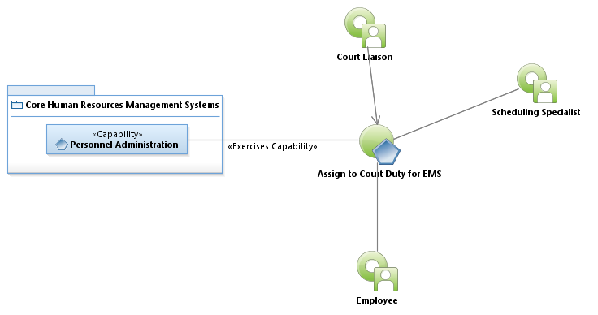

Activity Model: Assign to Court Duty for EMS

Use Case Model: Assign to Court Duty for EMS
Architect: First Last, IT Enterprise Architect
Date Last Modified: 4/12/2013
User Review: JoAnn Hooks, Karen Hill, Jason Alexander, Ryan Rauschke
Date: 4/12/2013
A subpoena has been received for an EMS employee. Their schedule is changed and they are reassigned to attend the court request.
Follow link to Role Definitions

Use Case Model: Assign to Court Duty for EMS
Activity Model: Assign to Court Duty for EMS
Activity Documentation
| Activity | Documentation |
|---|---|
| Reassign Employee To Court Within Telestaff, and Backfill Position. | The legal liaison determines if there is a work hours conflict due to the subpoena. |
Note: When the activity is self explanatory no documentation is provided.